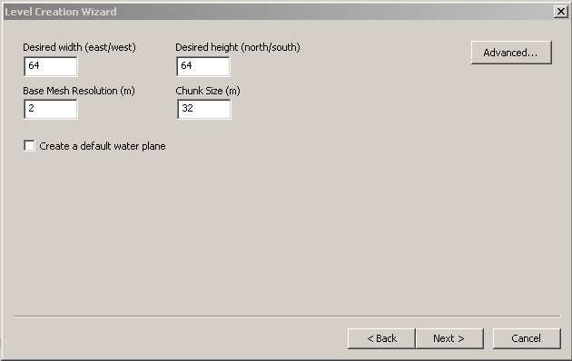
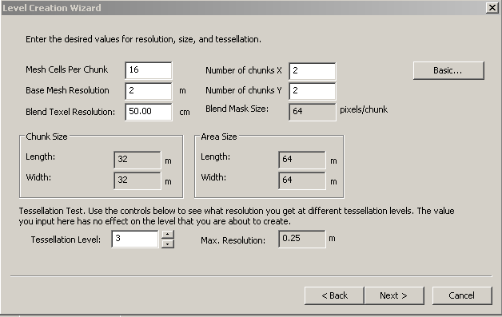
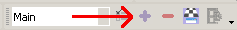
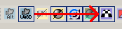
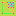

Exterior Level Manual
Contents
Introduction
While good information exists on creating exterior levels, much of it is fragmented. The goal of this manual is to provide a very through technical overview of the Level Editor in exterior mode. Every single button and command that is related to the process of creating an exterior level will be covered. What this manual is not is a how-to for creating a level. This is strictly for covering the commands and options. If all you want is a quick-and-dirty guide for making levels, this is not it. For those still reading, let's get to mastering this tool.
Assumptions
Some basic assumptions of prior knowledge are held. They are:
- You know how to Create a Module
- You can set the active Module
- You have the correct python version (which is 2.5.4) and have the correct win32 extensions installed. Installation instructions can be found here
- You understand the difference between Level, Area, and Map
Creating a Level
To create a level, you go to File->New->Level. By default terrain will be selected, so click on Next, and we're at our first important screen. We have two versions to pick from:
| Basic |
|  |
| Advance |
|  |
{kind=link}
{kind=link}
The main difference between the two, other than more options, is that changing a field in the Basic version won't affect the numbers in the other fields. In the Advance version, this can happen depending on what you changed. To change back and forth between the two, click on the Basic/Advanced button. BUG: You must click on the Basic button twice to go back into basic mode.
What do the Basic options mean
- Desired Width - How wide do you want this area to be in meters?
- Desired Height - How long do you want this area to be in meters?
- Base Mesh Resolution - I believe this measures the base of the mesh triangle. In meters.
- Chunk Size - How large or small do you want your terrain chunks? Chunks are explained later in the article. In Meters.
- Default Water Plane - Do you want a default water plane? I would recommend against this, as it creates the water plane up in the sky, and doesn't even match the terrain size you create. Just as easy to manually add it in when you're ready for water.
What do the Advanced options mean
Notice that in advanced mode, Chunk Size and Area Size aren't directly editable. Instead you alter the other values, and that determines how big the chunks are and how large the area is.
- Mesh Cells Per Chunk - How many cells or triangles will a chunk contain?
- Base Mesh Resolution - Size of the triangle in meters. Resolution * Cells Per Chunk = Chunk Size
- Blend Texel Resolution - In cm, and I'm not sure what this does yet. Increasing this value reduces file size, so I think this controls how detailed the textures appear. Lower = more detail.
- Number of chunks X - How many chunks long is your area? Chunk Size * This = Area Length
- Number of chunks Y - How many chunks wide is your area? Chunk Size * This = Area Width
- Blend Mask Size - Unsure, controlled by Blend Texel Resolution. Can be changed later.
- Tessellation Level - How many levels of tessellation can be done to the terrain mesh. Max Resolution shows the smallest possible triangle.
Saving the .lvl file
As soon as the level is created, I would recommend saving it out. Levels are not part of the database and must be saved to the file system. I would be a good idea to place them into an easy to find directory. Even better would be to use a cloud storage service like Drop Box to ensure you always have an archive of your file. Your level files will also appear in the Recent Files option under File.
Camera Controls
A detailed description of controls can be fond here: 3D controls. Keep in mind that the Level editor only supports the 3dsMax camera and WASD camera.
The Basic Steps All Levels Need
All exterior levels will need to have the following basic steps performed on them if they are to be used. I would recommend going through all of these steps as soon you've done the first save, and then save the level again after you're done.
- Add Export Area
- Add Start Point
- Add Ambient Light
- Render Lightmaps
- Post All Local
Export Area
| Detailed documentation can be found here. What you are doing here is defining the playable area of your level. As stated in the level editor it is possible to create multiple export areas. At this time I haven't experimented with this, and can't write anything on it. For now this will be focused on a single Export Area. To add in an Export Area, you need to click on the purple plus sign  . This will open a window with a lot of options. There are only two things that you must do, and one thing that you should do. |
{kind=link}
{kind=link}
First, you must set the Layout Name. This can only be seven characters, and the editor will cut-off the name if you enter in more than seven characters so that it is seven characters. This name is what will appear in the Area Layout list when you go to create an area. To this end, I recommend that you come up with a good naming convention. Now if you don't plan on releasing your level as a stand-alone resource for other modders, all you have to worry about is making sure the name doesn't conflict with Bioware's areas. If you are going to release it for others to use, I recommend using the first three letters as a unique code that indicates this belongs to you, the next two letters to indicate the level type (dungeon, plains, mountain, so on) and the last two for variations. For example I might call a level rcfMn1D. rcf = my intiails, Mn = mountain, 1D = 1st variant, day version.
Second, you must click on the Define Area button and set the walkable area of the level. I recommend you zoom out so you can see the whole level before trying to define the area. You will see three colored boxes like this:
{kind=link}
The checkerboard pattern is there because I turned on the display of chunk boundaries 
{kind=link}
The one thing you should do is change the Name property. Please do not get the Name and Layout Name properties confused. Layout Name controls what is seen in the Area Layout list, the Name property is just what to call this Export Area in the level editor. You don't have to change it, but I make it a habit to change it to Main.
More detailed information can be found (well no place yet need to write it)
Define mini-map lets you define the area the editor will take for the mini-map snapshot. Exporting the minimap must be done via right-click.
Start Point
Only thing this is used for is path finding. A start point must be added after the Export Area has been defined. Click on the flag icon File:StartPointIcon.png and then click on your map where you want it. The location doesn't matter as long as it is walkable. What will happen is during path finding, the editor will flood out from this point looking for walkable areas.
{kind=link}
Ambient Lighting
Sunlight provides basic lighting for an exterior level. You need to add an ambient baked light to get shadows. Unlike an interior level, you don't necessarily need separate character lights. The Lighting page gives a detailed description of the various kinds of light. To briefly summarize, a baked light only lights the terrain, a static light is expensive and can light either the player or the terrain, and I believe animated lights are terrain only, but have animated shadows that get baked into the lightmap. An ambient light is basically a light value that is applied everywhere, and is normally used to ensure shadows aren't pitch black.
There are two ways to add in lights: One is to right-click on the terrain, and the other is to right-click on the Terrain World menu. Select Insert->New Light, and a Point:Baked light will be added in. Leave all the options alone for this light with the exception of Name. I recommend changing the name to ambient so you can find it easily.
Render Lightmaps
At this time, the difference between Render Lightmaps (cached scene) and Render Lightmaps is not understood. It is recommended that you use Render Lightmaps. Click on the icon File:RenderLightmap.png to start the rendering process. This can potentially take a long time. It is recommended that you turn on the Task Manager so you can see CPU usage. As long as there is high CPU usage, the script should be working. After the render is done you will need to toggle off View Models Fully Lit File:ViewModelsLit.png and toggle on Display Lightmaps File:DisplayLightmaps.png. It can be helpful to leave lightmaps off and fully lit on while you are working on terrain and object placement since it makes things easier to see.
{kind=link}
{kind=link}
{kind=link}
Post All Local
Languard believes it generates and places the .ARL file into a path in My Documents. This path is read by the toolset when selecting area layouts. Doing a Post to Local does not grab trees. Also by default the minimap will not be posted. You must right-click and select Minimap -> Post Minimap to Local for it to show in game.
Terrain Mesh Editing
The terrain mesh defines the ground of the level. A mesh is a collection of triangles that are all fitted together to make a shape. When editing the terrain mesh, you are really just moving the points of the triangle around. This is where the base mesh resolution comes into play. The large the base resolution, the larger the triangles, and the the blockier the terrain will be. You can of course adjust this with the Tessellate tool. The more triangles the level has the larger the file and the more strain it will place on a computer, both creator and player. Another item to keep in mind is to not do extreme mesh deformations, because this can really mess with the texture placement.
{kind=link}
There are several tools available to for editing the mesh.
Icons
- Deform
- Plateau
- Smooth
-

Tessellate
{kind=link}
{kind=link}
{kind=link}
{kind=link}
Common Brush Options
All brushes have some common options that behave exactly the same way. General and Round Brush properties are shared amongst all brushes.
| ⊟ | General | |
| Brush Type | Grayed out, show which brush you are using | |
| Grid Opacity | How visible the mesh grid is. 0 is transparent, 100 is fully visible. Default is 5 and around 40 gives a highly visible grid. | |
| Visible Level | Unknown. Default is 5. | |
| ⊟ | Round Brush | |
| Inner Radius % | What percentage of the Outer Radius has full strength. Default is 50. Lower values give more rounded brushes, higher values give flatter brushes | |
| Outer Radius | How large in meters is the brush |
Deform Tool
The deform tool is what you use to push and pull the mesh around into the shape that you want. The options are:
| ⊟ | General | |
| Brush Type | Grayed out, show which brush you are using | |
| Deform Mode | Raise / Lower or Extrude along normal. Explained below. | |
| Grid Opacity | How visible the mesh grid is. 0 is transparent, 100 is fully visible. Default is 5 and around 40 gives a highly visible grid. | |
| Visible Level | Unknown. Range is 0 to 5, with a default of 5. | |
| ⊟ | Deform Tool | |
| Distance | Range is 0.1 to 100, with 1 being default. Not 100% sure of the exact effect, other than setting it above 1 makes the mesh deform a lot faster. | |
| ⊟ | Round Brush | |
| Enable Noise | True or False. Adds a random amount of noise to the mesh points within the brushes radius when set to true. | |
| Inner Radius % | What percentage of the Outer Radius has full strength. Default is 50. Lower values give more rounded brushes, higher values give flatter brushes | |
| Max Strength | Range is 0 to 100 with 50 being default. Determines how strongly the brush affects the mesh. Large values enable fast changes, low values make for very slow changes. | |
| Noise Frequency | Range is 0 to 100 with 20 being default. Percentage chance that noise is applied to a point. | |
| Outer Radius | How large in meters is the brush |
Plateau Tool
Takes the height of the center vertex and flattens all vertexes within the brush radius to that height.
| ⊟ | General | |
| Brush Type | Grayed out, show which brush you are using | |
| Grid Opacity | How visible the mesh grid is. 0 is transparent, 100 is fully visible. Default is 5 and around 40 gives a highly visible grid. | |
| Visible Level | Unknown. Range is 0 to 5, with a default of 5. | |
| ⊟ | Round Brush | |
| Enable Noise | True or False. No visible effect for this brush. | |
| Inner Radius % | No noticeable effect. A 0% and 100% value produces the same result | |
| Max Strength | Range is 0 to 100 with 50 being default. Determines how strongly the brush affects the mesh. Large values enable fast changes, low values make for very slow changes. | |
| Noise Frequency | Range is 0 to 100 with 20 being default. No effect. | |
| Outer Radius | How large in meters is the brush |
Smooth Tool
This brush smooths out the terrain, making transitions in height less sharp
| ⊟ | General | |
| Brush Type | Grayed out, show which brush you are using | |
| Grid Opacity | How visible the mesh grid is. 0 is transparent, 100 is fully visible. Default is 5 and around 40 gives a highly visible grid. | |
| Visible Level | Unknown. Range is 0 to 5, with a default of 5. | |
| ⊟ | Round Brush | |
| Enable Noise | True or False. No effect. | |
| Inner Radius % | What percentage of the Outer Radius has full strength. Default is 50. No effect. | |
| Max Strength | Range is 0 to 100 with 50 being default. Determines how strongly the brush affects the mesh. Large values enable fast changes, low values make for very slow changes. | |
| Noise Frequency | Range is 0 to 100 with 20 being default. No effect. | |
| Outer Radius | How large in meters is the brush | |
| ⊟ | Smooth Tool | |
| Weight | 0 to 100, default of 100. Seems to modify the strength of the smoothing. Languard's guess is that this controls how much the center vertex is affected by the other vertexes. A weight of zero produces no changes, and a very small value like five seems to produce less drastic smoothing than 100. |
Tessellate Tool
What it does and how options affect it
Texture Editing
General idea behind textures. You can only have 8. No more than three textures blended together.
Adding a Texture to the Pallete
Explain how to add a texture to the pallete. Explain the differences between diffuse, normal, and specular
Texture Paint Tool
What it does and how options affect it
Texture Smooth Tool
What it does and how options affect it
Relax Map Tool
What it does and how options affect it
Water
Skip for now
Model and Vegetation Movement Tools
Snap
Move
Rotate
Select
Vegetation
Models
Pathfinding
Flood-fill algorithm. Rays are cast down, so if you have overhangs only the top is walkable. Terrain can get really steep before the auto-no-walk kicks in, so use the Terrain Collision tools to block off areas that are to steep to reasonably walk on.
{kind=link}
Show Terrain Collision
This simply toggles on and of the display of the terrain collisions.
Build Terrain Collision
Toggles show collisions on, and puts you into build mode for terrain collisions. Clicking the left mouse button anchors the first point of a 'wall'. A second click will anchor the second point, and you now can see a blue wall. The flood-fill pathfinding will not cross this wall. Continue left clicking to place an unbroken wall around the terrain you wish to block off. Right clicking will end the wall chain. If you are not currently building a wall, right clicking will delete a wall segment.